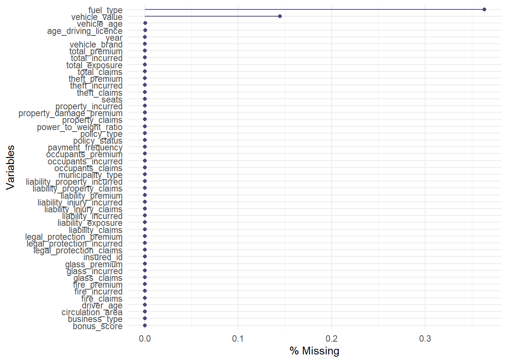
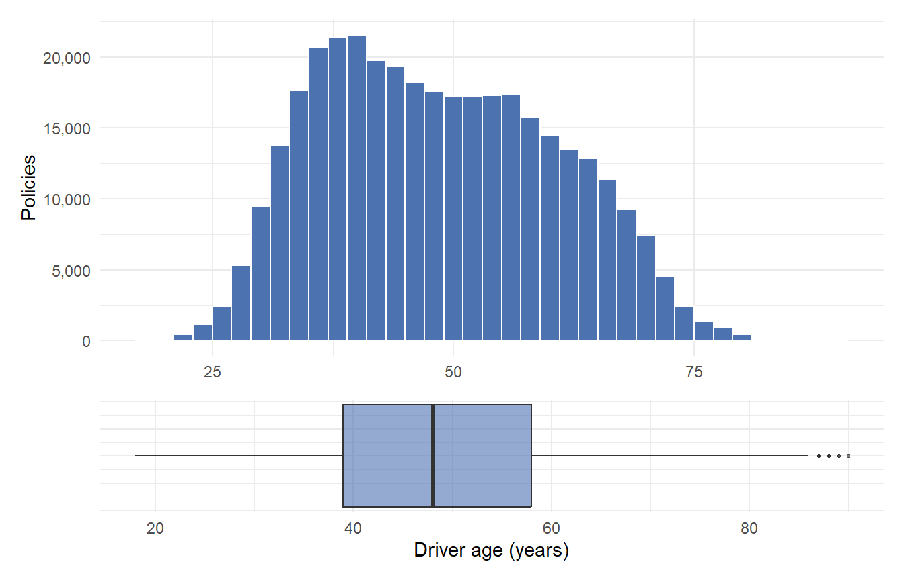
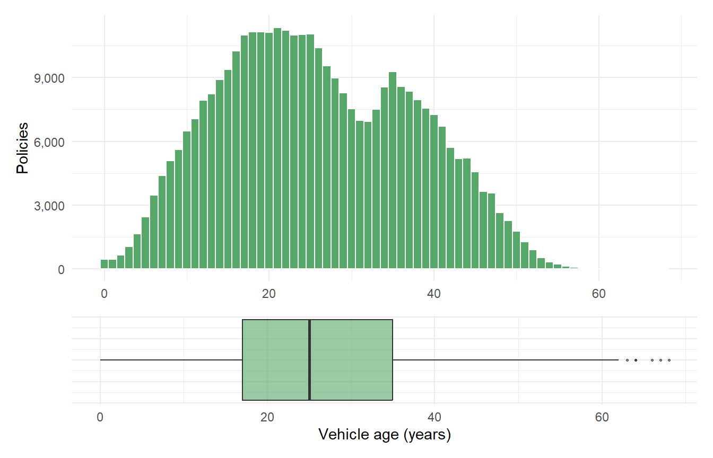
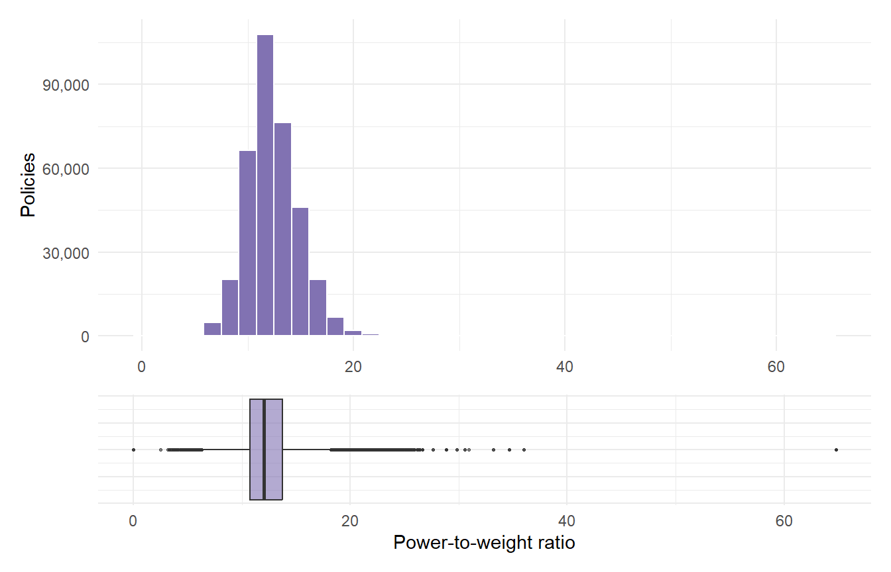
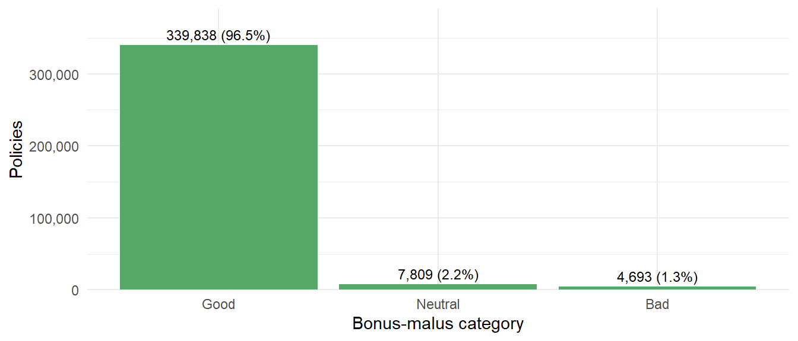
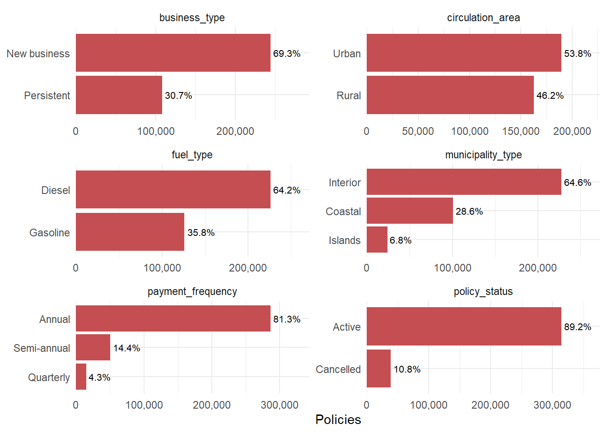
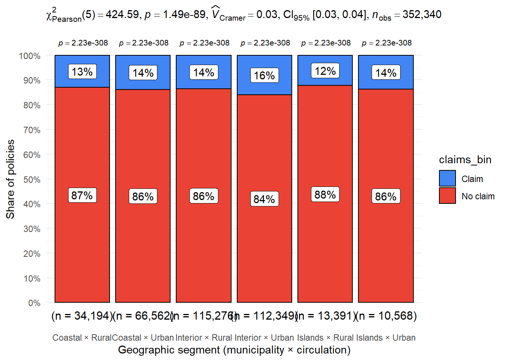
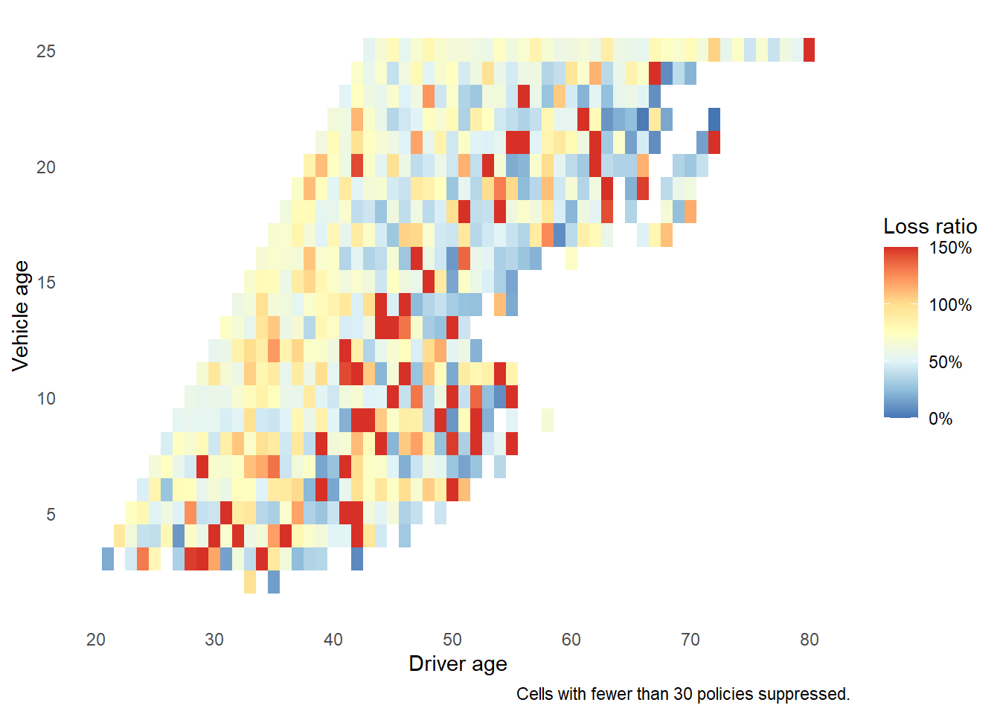

pacman::p_load(tidyverse, readxl, janitor, skimr, naniar,
ggstatsplot, ggdist, ggridges,
patchwork, scales, knitr)Take Home Exercise 1
Diagnosing Loss Drivers in a Spanish Motor Portfolio
1 Overview
1.1 Setting the scene
Property and casualty insurance portfolios routinely underperform without the insurer being able to diagnose why. Loss-driving pockets hide inside coarse segments. Mispriced coverage tiers persist because no one has visualised the loss-ratio gap. Premium inadequacy in narrow sub-books goes undetected until a bad year exposes it.
Note
“Insurers often carry underperforming portfolios where the root causes of poor profitability and high volatility are unknown. Leveraging visual analytics can potentially help investigate trends in underlying loss drivers, while data enrichment using external data can help refine segmentation and underwriting strategy.”
Swiss Re Institute (2019), sigma 4/2019: Advanced analytics: unlocking new frontiers in P&C insurance
Motor insurance is a particularly fertile setting for visual analytics. Premiums are exposure-weighted. Claims arrive frequently enough to support statistical inference at the segment level. A loss-ratio improvement of two to five percentage points, achievable through better segmentation alone, can move a motor book between profit and loss.
1.2 Analytical objectives
This report applies visual analytics to a Spanish motor vehicle insurance portfolio with two objectives:
Univariate analysis: characterise the distribution of the portfolio’s numerical and categorical variables, surfacing concentration, skewness, and structural features that inform downstream segmentation.
Bivariate analysis with statistical validation: investigate the factors influencing portfolio profitability (proxied by loss ratio) and volatility (proxied by the coefficient of variation of loss ratio across policies within a segment), with statistical validation of the observed patterns.
Beyond this scope, the analysis applies two visual analytics methods that sit outside Lessons 1 to 5, selected to leverage features of the dataset that standard univariate and bivariate methods cannot reach.
1.3 Dataset
The data is a real-world Spanish motor insurance portfolio published through Mendeley Data, comprising 354,140 policy-year records across 185,678 unique policyholders between 2022 and 2024. The dataset contains 47 variables organised into four logical groups:
- Policy and insured characteristics:
policy_type,bonus_score,business_type,payment_frequency, and the observation year. - Driver and vehicle characteristics:
driver_age,vehicle_age,fuel_type,vehicle_value,power_to_weight_ratio,circulation_area, and others. - Premiums:
total_premiumand seven coverage-specific premiums (liability, property damage, theft, fire, glass, legal protection, occupants). - Exposure, claim counts, and incurred costs: total and per coverage.
The granularity of premium and incurred figures permits coverage-specific loss-ratio decomposition in addition to portfolio-level analysis. This level of detail is uncommon in publicly available motor insurance datasets, and the report exploits it where it adds analytical leverage.
Note
Reproducibility: The raw data file (Dataset of motor insurance portfolio.csv, approximately 90MB) exceeds GitHub’s recommended file size limit and is therefore excluded from this repository via .gitignore. To reproduce the analysis, download the dataset from Mendeley Data and place it in the Data/ folder at the project root. The analytical sandbox (motor_clean.rds) is generated on first render by the code in Section 2 and does not need to be committed.
1.4 Report structure
Section 2 documents the analytical sandbox preparation: import, cleaning, type encoding, and derivation of the profitability and volatility variables. Section 3 presents the univariate distributional analysis. Section 4 examines bivariate relationships with statistical validation of the observed effects. Section 5 introduces two visual analytics methods that extend beyond the techniques covered in class. Section 6 synthesises the findings into recommended actions.
2 Analytical sandbox preparation
2.1 Loading R packages
The analytical pipeline relies on the tidyverse for data wrangling, several ggplot2 extensions for visualisation, and supporting packages for table presentation. Each package is selected for a specific role. The rationale is summarised below.
| Package | Purpose |
|---|---|
tidyverse |
Core wrangling and visualisation grammar |
readxl |
Reading the data dictionary .xlsx |
janitor |
Variable name cleaning and duplicate detection |
skimr |
Compact summary of numerical and categorical variables |
naniar |
Visualising missingness patterns |
ggstatsplot |
Statistical test annotations on plots |
ggdist |
Uncertainty and distribution geoms |
ggridges |
Ridgeline density plots |
patchwork |
Composite plot layouts |
scales |
Axis formatting (percent, comma, currency) |
knitr |
Table rendering |
2.2 Importing the raw data
The portfolio file is a semicolon-delimited CSV using European decimal conventions. The companion data dictionary is a small Excel workbook documenting variable meanings and units, used as a reference during encoding decisions.
raw <- read_delim("Data/Dataset of motor insurance portfolio.csv",
delim = ";", show_col_types = FALSE) |>
clean_names()
dict <- read_excel("Data/Descriptive of variables.xlsx") |>
clean_names()clean_names() from janitor standardises column names to snake_case, removing the need for backtick-escaping downstream.
2.3 Initial inspection
glimpse(raw)Rows: 354,140
Columns: 47
$ insured_id <dbl> 1, 2, 2, 2, 3, 3, 3, 4, 4, 4, 5, 5, 5, 6, …
$ year <dbl> 2022, 2022, 2023, 2024, 2022, 2023, 2024, …
$ policy_type <chr> "COMP_E", "COMP_E", "COMP_E", "COMP_E", "C…
$ policy_status <chr> "C", "A", "A", "A", "A", "A", "A", "A", "A…
$ business_type <chr> "NB", "P", "P", "P", "NB", "P", "P", "NB",…
$ payment_frequency <chr> "A", "A", "A", "A", "S", "S", "S", "A", "A…
$ bonus_score <chr> "G", "G", "G", "G", "G", "G", "G", "G", "G…
$ driver_age <dbl> 48, 43, 44, 45, 45, 46, 47, 32, 33, 34, 39…
$ vehicle_age <dbl> 22, 24, 25, 26, 26, 27, 28, 12, 13, 14, 20…
$ age_driving_licence <dbl> 26, 19, 19, 18, 19, 19, 19, 19, 19, 19, 19…
$ fuel_type <chr> "G", "D", "D", "D", "D", "D", "D", "D", "D…
$ vehicle_value <dbl> 149511.44, 65065.12, 65065.12, 65065.12, 5…
$ seats <dbl> 4, 8, 8, 8, 7, 7, 7, 5, 5, 5, 5, 5, 5, 5, …
$ power_to_weight_ratio <dbl> 3.92, 10.15, 10.15, 10.15, 9.19, 9.19, 9.1…
$ vehicle_brand <chr> "PORSCHE", "MERCEDES", "MERCEDES", "MERCED…
$ municipality_type <chr> "I", "I", "I", "I", "I", "I", "I", "I", "I…
$ circulation_area <chr> "U", "U", "U", "U", "R", "R", "R", "R", "R…
$ total_premium <dbl> 279.5576, 546.6234, 548.7526, 584.6324, 68…
$ liability_premium <dbl> 30.60232, 114.33336, 110.66689, 122.09253,…
$ property_damage_premium <dbl> 121.9127, 303.1060, 304.9560, 305.2251, 35…
$ theft_premium <dbl> 112.361489, 80.784824, 83.521384, 107.8868…
$ fire_premium <dbl> 3.832441, 7.826861, 6.151465, 5.842892, 7.…
$ glass_premium <dbl> 8.305788, 30.091751, 32.861626, 31.101584,…
$ legal_protection_premium <dbl> 2.043622, 7.812747, 7.655637, 10.084173, 6…
$ occupants_premium <dbl> 0.4992053, 2.6679084, 2.9395659, 2.3992827…
$ total_claims <dbl> 0, 0, 1, 2, 0, 0, 0, 0, 0, 0, 0, 0, 0, 5, …
$ liability_claims <dbl> 0, 0, 1, 1, 0, 0, 0, 0, 0, 0, 0, 0, 0, 0, …
$ liability_property_claims <dbl> 0, 0, 1, 1, 0, 0, 0, 0, 0, 0, 0, 0, 0, 0, …
$ liability_injury_claims <dbl> 0, 0, 0, 0, 0, 0, 0, 0, 0, 0, 0, 0, 0, 0, …
$ property_claims <dbl> 0, 0, 0, 1, 0, 0, 0, 0, 0, 0, 0, 0, 0, 5, …
$ theft_claims <dbl> 0, 0, 0, 0, 0, 0, 0, 0, 0, 0, 0, 0, 0, 0, …
$ fire_claims <dbl> 0, 0, 0, 0, 0, 0, 0, 0, 0, 0, 0, 0, 0, 0, …
$ glass_claims <dbl> 0, 0, 0, 0, 0, 0, 0, 0, 0, 0, 0, 0, 0, 0, …
$ legal_protection_claims <dbl> 0, 0, 0, 0, 0, 0, 0, 0, 0, 0, 0, 0, 0, 0, …
$ occupants_claims <dbl> 0, 0, 0, 0, 0, 0, 0, 0, 0, 0, 0, 0, 0, 0, …
$ total_incurred <dbl> 0.000, 0.000, 233.013, 2586.361, 0.000, 0.…
$ liability_incurred <dbl> 0.000, 0.000, 233.013, 1035.000, 0.000, 0.…
$ liability_property_incurred <dbl> 0.000, 0.000, 233.013, 1035.000, 0.000, 0.…
$ liability_injury_incurred <dbl> 0.000, 0.000, 0.000, 0.000, 0.000, 0.000, …
$ property_incurred <dbl> 0.000, 0.000, 0.000, 1551.361, 0.000, 0.00…
$ theft_incurred <dbl> 0, 0, 0, 0, 0, 0, 0, 0, 0, 0, 0, 0, 0, 0, …
$ fire_incurred <dbl> 0, 0, 0, 0, 0, 0, 0, 0, 0, 0, 0, 0, 0, 0, …
$ glass_incurred <dbl> 0, 0, 0, 0, 0, 0, 0, 0, 0, 0, 0, 0, 0, 0, …
$ legal_protection_incurred <dbl> 0, 0, 0, 0, 0, 0, 0, 0, 0, 0, 0, 0, 0, 0, …
$ occupants_incurred <dbl> 0, 0, 0, 0, 0, 0, 0, 0, 0, 0, 0, 0, 0, 0, …
$ total_exposure <dbl> 0.09863014, 1.00000000, 1.00000000, 1.0000…
$ liability_exposure <dbl> 0.09863014, 1.00000000, 1.00000000, 1.0000…The portfolio contains 354,140 policy-year records across 47 variables. Each record is one policy-year, meaning a single policyholder may appear in multiple rows if their policy spans 2022, 2023, and 2024. This panel structure is preserved for the bivariate analysis in Section 4 and exploited for the bonus analysis in Section 5.
2.3.1 Duplicates
raw |>
get_dupes() |>
nrow()[1] 0No exact duplicates were detected.
2.3.2 Missingness
gg_miss_var(raw, show_pct = TRUE)
Four variables contain missing values. fuel_type (1,287 missing, 0.36%) and vehicle_value (513 missing, 0.14%) account for nearly all of it. The remaining columns have two or fewer NAs each. Because missingness is concentrated in non-target descriptive variables and represents under half a percent of records, listwise deletion is acceptable without introducing meaningful selection bias.
raw <- raw |> drop_na(fuel_type, vehicle_value)The two patterns of missingness are non-overlapping. No row has both fuel_type and vehicle_value missing, so listwise deletion removes exactly 1,800 records (0.51% of the portfolio) without any compounding effect.
2.4 Variable encoding
Categorical variables are imported as character vectors. Converting them to factors with explicit, meaningful level ordering improves both downstream plot readability and statistical test behaviour.
Two ordering choices warrant explanation. The policy_type levels are ordered from least to most comprehensive coverage (TP, TPG, CC, COMP_E, COMP_N), enabling monotonic interpretation of loss-ratio gradients across coverage tiers. The bonus_score levels are ordered from best to worst claim history (G, N, B), following the bonus-malus convention used by motor insurers.
clean <- raw |>
mutate(
year = as.integer(year),
policy_type = factor(policy_type,
levels = c("TP","TPG","CC","COMP_E","COMP_N")),
policy_status = factor(policy_status, levels = c("A","C"),
labels = c("Active","Cancelled")),
business_type = factor(business_type, levels = c("NB","P"),
labels = c("New business","Persistent")),
payment_frequency = factor(payment_frequency, levels = c("A","S","Q"),
labels = c("Annual","Semi-annual","Quarterly")),
bonus_score = factor(bonus_score, levels = c("G","N","B"),
labels = c("Good","Neutral","Bad")),
fuel_type = factor(fuel_type, levels = c("D","G"),
labels = c("Diesel","Gasoline")),
municipality_type = factor(municipality_type, levels = c("I","C","IS"),
labels = c("Interior","Coastal","Islands")),
circulation_area = factor(circulation_area, levels = c("U","R"),
labels = c("Urban","Rural"))
)2.5 Derived analytical variables
The brief identifies portfolio profitability and volatility as the outcomes of interest, but neither exists in the raw data. Both must be derived from the relationship between premiums collected, losses incurred, and policy exposure. Three policy-level metrics form the foundation:
- Loss ratio: incurred losses divided by earned premium. The industry-standard measure of pure underwriting profitability before expense loading. A loss ratio below approximately 70% indicates a contribution to operating profit on a motor book.
- Claim frequency: claim count divided by exposure (in policy-years). Exposure-normalising is essential because most policies in this dataset are on-risk for only part of the year (mean exposure 0.71).
- Claim severity: incurred losses divided by claim count, defined only where claims occurred.
clean <- clean |>
mutate(
loss_ratio = if_else(total_premium > 0,
total_incurred / total_premium, NA_real_),
claim_frequency = if_else(total_exposure > 0,
total_claims / total_exposure, NA_real_),
claim_severity = if_else(total_claims > 0,
total_incurred / total_claims, NA_real_)
)Three additional banded variables are constructed to support bivariate segmentation. Bands use breaks informed by the underlying distributions (verified in Section 3) and motor underwriting practice.
clean <- clean |>
mutate(
driver_age_band = cut(driver_age,
breaks = c(0, 25, 35, 50, 65, Inf),
labels = c("<25","25-34","35-49","50-64","65+"),
right = FALSE),
vehicle_age_band = cut(vehicle_age,
breaks = c(-1, 2, 5, 10, 15, Inf),
labels = c("0-2","3-5","6-10","11-15","16+"),
right = TRUE),
vehicle_value_band = cut(vehicle_value,
breaks = quantile(vehicle_value,
probs = c(0, .25, .5, .75, 1),
na.rm = TRUE),
labels = c("Q1","Q2","Q3","Q4"),
include.lowest = TRUE)
)driver_age_band follows actuarial convention: the under-25 band is consistently the highest-risk group in motor insurance, and 65+ is the standard senior threshold. vehicle_age_band uses breaks aligned with depreciation milestones. vehicle_value_band uses quartiles rather than fixed cuts because vehicle values span several orders of magnitude.
2.6 Volatility metric
Volatility is operationalised at the segment level as the coefficient of variation (CV) of loss ratio across the policies within a segment. Unlike standard deviation, CV is scale-free, making it directly comparable across segments with very different loss-ratio means. A high CV indicates that a segment’s profitability is unstable. Even if its mean loss ratio is acceptable, the distribution of individual-policy outcomes is wide, raising the risk of unexpected losses in any given year.
This summary is computed on demand within the bivariate analysis (Section 4) rather than added to the policy-level data frame, as it is inherently a group-level statistic.
2.7 Saving the analytical sandbox
The cleaned, encoded, and enriched dataset is written to disk as a single .rds file. The slides deliverable consumes the same file, ensuring perfect consistency between report and presentation.
write_rds(clean, "Data/motor_clean.rds")clean |>
summarise(
records = n(),
policyholders = n_distinct(insured_id),
years_covered = paste(range(year), collapse = "–"),
total_premium = sum(total_premium),
total_incurred = sum(total_incurred),
portfolio_loss_ratio = total_incurred / total_premium
) |>
kable(caption = "Analytical sandbox summary",
format.args = list(big.mark = ","))| records | policyholders | years_covered | total_premium | total_incurred | portfolio_loss_ratio |
|---|---|---|---|---|---|
| 352,340 | 184,725 | 2022–2024 | 104,380,281 | 73,412,081 | 0.7033137 |
2.8 Wrangling flowchart
The figure below summarises the analytical-sandbox preparation pipeline.
flowchart LR A[Raw CSV<br/>354,140 × 47] --> B[clean_names<br/>snake_case] D[Data dictionary<br/>.xlsx] -.reference.-> B B --> C[Drop NA<br/>fuel_type, vehicle_value] C --> E[Factor encoding<br/>8 categoricals] E --> F[Derive KPIs<br/>loss_ratio, frequency, severity] F --> G[Band continuous<br/>driver/vehicle age, value] G --> H[(motor_clean.rds<br/>352,340 × 53)]
3 Univariate visual analysis
3.1 Methodology
Univariate analysis serves two purposes in this exercise. First, it documents the shape of each variable, including central tendency, spread, skewness, and modality, which constrains the techniques available for bivariate analysis. Second, it surfaces concentrations and outliers that often turn out to be the loss drivers the brief asks the analyst to identify.
Two visual conventions are used:
- Continuous variables: a histogram paired with a horizontal boxplot via the
patchworkpackage. The histogram shows distribution shape. The boxplot makes outliers and the five-number summary explicit. The composite is a more honest representation than either alone. - Categorical variables: an ordered bar chart with frequency labels. Ordering by frequency (rather than alphabetical or factor-default) reveals concentration immediately, with the most common category at the top.
clean <- read_rds("Data/motor_clean.rds")3.2 Continuous variables
3.2.1 Driver age
p_hist <- ggplot(clean, aes(x = driver_age)) +
geom_histogram(binwidth = 2, fill = "#4C72B0", colour = "white") +
scale_y_continuous(labels = comma) +
labs(x = NULL, y = "Policies") +
theme_minimal()
p_box <- ggplot(clean, aes(x = driver_age)) +
geom_boxplot(fill = "#4C72B0", alpha = 0.6, outlier.size = 0.5) +
labs(x = "Driver age (years)", y = NULL) +
theme_minimal() +
theme(axis.text.y = element_blank())
p_hist / p_box + plot_layout(heights = c(3, 1))
The driver-age distribution is right-skewed with a mode around the early forties and a long tail of older drivers. The under-25 segment is small in volume but structurally important. It is the conventional high-risk pool in motor underwriting and becomes a focal point of the bivariate analysis. The 65+ tail is similarly relevant, as senior drivers carry distinct accident-risk profiles.
3.2.2 Vehicle age
p_hist <- ggplot(clean, aes(x = vehicle_age)) +
geom_histogram(binwidth = 1, fill = "#55A868", colour = "white") +
scale_y_continuous(labels = comma) +
labs(x = NULL, y = "Policies") +
theme_minimal()
p_box <- ggplot(clean, aes(x = vehicle_age)) +
geom_boxplot(fill = "#55A868", alpha = 0.6, outlier.size = 0.5) +
labs(x = "Vehicle age (years)", y = NULL) +
theme_minimal() +
theme(axis.text.y = element_blank())
p_hist / p_box + plot_layout(heights = c(3, 1))
Vehicle age is approximately uniform from 0 to about 15 years, then declines sharply. The median is around 10 years, indicating a mature vehicle fleet. The shape suggests two underwriting considerations. Theft exposure peaks for newer, higher-value vehicles. Breakdown and mechanical-failure claims rise with vehicle age. These tensions show up in the bivariate analysis of coverage tier.
3.2.3 Vehicle value
p_hist <- ggplot(clean, aes(x = vehicle_value)) +
geom_histogram(bins = 60, fill = "#C44E52", colour = "white") +
scale_x_continuous(labels = label_comma(), trans = "log10") +
scale_y_continuous(labels = comma) +
labs(x = NULL, y = "Policies") +
theme_minimal()
p_box <- ggplot(clean, aes(x = vehicle_value)) +
geom_boxplot(fill = "#C44E52", alpha = 0.6, outlier.size = 0.5) +
scale_x_continuous(labels = label_comma(), trans = "log10") +
labs(x = "Vehicle value (€, log scale)", y = NULL) +
theme_minimal() +
theme(axis.text.y = element_blank())
p_hist / p_box + plot_layout(heights = c(3, 1))
Vehicle value spans roughly three orders of magnitude, from a few hundred euros to over €100,000. The distribution is heavily right-skewed on a linear scale. Plotting on a log-10 scale reveals an approximately log-normal shape centred on €10,000 to €15,000. The log transformation matters for analytical choices. Any segmentation that uses vehicle value as a discriminating variable should band on percentiles (quartiles, as used in vehicle_value_band) rather than equal intervals.
3.2.4 Power-to-weight ratio
p_hist <- ggplot(clean, aes(x = power_to_weight_ratio)) +
geom_histogram(bins = 40, fill = "#8172B2", colour = "white") +
scale_y_continuous(labels = comma) +
labs(x = NULL, y = "Policies") +
theme_minimal()
p_box <- ggplot(clean, aes(x = power_to_weight_ratio)) +
geom_boxplot(fill = "#8172B2", alpha = 0.6, outlier.size = 0.5) +
labs(x = "Power-to-weight ratio", y = NULL) +
theme_minimal() +
theme(axis.text.y = element_blank())
p_hist / p_box + plot_layout(heights = c(3, 1))
Power-to-weight is approximately symmetric around a typical mid-range value, with a moderately long right tail representing high-performance vehicles. The tail carries the structural risk concern. Power-to-weight correlates with claim frequency and severity in motor portfolios, and a small number of high-performance policies can disproportionately affect segment-level loss ratios.
3.3 Categorical variables
3.3.1 Policy type
clean |>
count(policy_type) |>
mutate(pct = n / sum(n)) |>
ggplot(aes(x = fct_reorder(policy_type, n), y = n)) +
geom_col(fill = "#4C72B0") +
geom_text(aes(label = paste0(comma(n), "\n(", percent(pct, accuracy = 0.1), ")")),
hjust = -0.1, size = 3.2, lineheight = 0.9) +
scale_y_continuous(labels = comma, expand = expansion(mult = c(0, 0.2))) +
coord_flip() +
labs(x = NULL, y = "Policies") +
theme_minimal()
CC (combined) and TPG dominate the policy book, accounting for the majority of records. COMP_N (comprehensive without excess) and COMP_E (comprehensive with excess) are the smaller, higher-coverage tiers. As Section 4 shows, these tiers carry the highest loss intensity relative to premium charged.
3.3.2 Bonus score
clean |>
count(bonus_score) |>
mutate(pct = n / sum(n)) |>
ggplot(aes(x = bonus_score, y = n)) +
geom_col(fill = "#55A868") +
geom_text(aes(label = paste0(comma(n), " (", percent(pct, accuracy = 0.1), ")")),
vjust = -0.5, size = 3.2) +
scale_y_continuous(labels = comma, expand = expansion(mult = c(0, 0.15))) +
labs(x = "Bonus-malus category", y = "Policies") +
theme_minimal()
The bonus-malus distribution is heavily concentrated. The vast majority of policies sit in the Good category, with the Neutral and Bad segments accounting for a small share. This concentration matters analytically. With so few records in the worst category, within-segment variance estimates are noisier and statistical tests need to account for the imbalance.
3.3.3 Other categoricals
cat_vars <- c("policy_status", "business_type", "payment_frequency",
"fuel_type", "municipality_type", "circulation_area")
clean |>
select(all_of(cat_vars)) |>
pivot_longer(everything(), names_to = "variable", values_to = "value") |>
count(variable, value) |>
group_by(variable) |>
mutate(pct = n / sum(n)) |>
ungroup() |>
ggplot(aes(x = fct_reorder(value, n), y = n)) +
geom_col(fill = "#C44E52") +
geom_text(aes(label = percent(pct, accuracy = 0.1)),
hjust = -0.1, size = 2.8) +
scale_y_continuous(labels = comma, expand = expansion(mult = c(0, 0.2))) +
coord_flip() +
facet_wrap(~ variable, scales = "free", ncol = 2) +
labs(x = NULL, y = "Policies") +
theme_minimal()
Several concentrations are worth noting. The portfolio is predominantly persistent business (renewals) rather than new business, indicating a mature book. Annual payment dominates over instalment options. Diesel vehicles outnumber gasoline. Urban circulation outweighs rural, reflecting the demographic distribution of policyholders. The interior region is the largest. The islands and coastal regions are non-trivial and, as Section 4 reveals, carry distinct loss-ratio profiles.
3.4 Distribution of derived KPIs
The three derived KPIs are themselves variables worth profiling. At the policy level, they are highly skewed: most policies have no claims, so most loss ratios and frequencies are zero. Restricting the view to policies with at least one claim reveals the within-distribution shape that matters for segment-level analysis.
clean |>
filter(total_claims > 0) |>
ggplot(aes(x = loss_ratio)) +
geom_histogram(bins = 60, fill = "#4C72B0", colour = "white") +
scale_x_continuous(trans = "log10", labels = label_percent(accuracy = 1)) +
scale_y_continuous(labels = comma) +
geom_vline(xintercept = 1, linetype = "dashed", colour = "red") +
labs(x = "Loss ratio (log scale)", y = "Policies") +
theme_minimal()
Among policies with at least one claim, the loss-ratio distribution spans nearly four orders of magnitude. The red dashed line marks the break-even point (100% loss ratio), where losses equal premium. A substantial mass of policies sits above this line, meaning these individual policies returned more in claims than they collected in premium. Segment-level mean loss ratios mask this within-segment variance, which is what the volatility (coefficient of variation) analysis in Section 4 surfaces.
3.5 Summary of univariate observations
The univariate view raises three structural features the bivariate analysis must contend with:
- Strong distributional skew in vehicle value and the derived KPIs. Linear-scale plots will mislead. Log scales and percentile bands are appropriate.
- Heavy class imbalance in
bonus_score(concentrated in Good) andpolicy_type(concentrated in CC and TPG). Statistical tests must account for unequal group sizes. - The zero-claim majority. Roughly 85% of policy-years have no claims, making policy-level loss ratio a noisy individual measure but a clean segment-level one when aggregated by exposure-weighted sums.
4 Bivariate visual analysis with statistical validation
4.1 Methodology
The bivariate analysis investigates how the portfolio’s policy, vehicle, driver, and geographic characteristics relate to its profitability (loss ratio) and volatility (coefficient of variation of loss ratio across policies within a segment).
Three analytical principles guide the work:
- Segment-level loss ratio, not policy-level. Individual policies have highly skewed loss ratios, since most are zero and a few are very large. Aggregating to the segment level via
sum(total_incurred) / sum(total_premium)produces the exposure-weighted metric an underwriter would price against. - Statistical validation alongside every visual claim. Where the relationship is categorical,
ggstatsplot::ggbetweenstatsorggbarstatsprovides inline test annotations (ANOVA, Kruskal-Wallis, chi-square). Where the comparison is across years on a ratio of sums, bootstrap confidence intervals are used because the sampling distribution of a ratio is not well-described by closed-form parametric tests. - Volatility reported alongside profitability. A segment with high mean loss ratio is unprofitable. A segment with high CV of loss ratio is unpredictable. Underwriting interventions for these two cases differ and should not be conflated.
4.2 Temporal trajectory
The first question to ask of any insurance portfolio is whether the recent loss experience is stable, improving, or worsening. The aggregate view by year shows clear movement.
yr <- clean |>
group_by(year) |>
summarise(
premium = sum(total_premium),
incurred = sum(total_incurred),
exposure = sum(total_exposure),
claims = sum(total_claims),
n_pol = n(),
.groups = "drop"
) |>
mutate(
loss_ratio = incurred / premium,
frequency = claims / exposure,
severity = incurred / claims
)
yr |>
select(year, n_pol, premium, incurred, loss_ratio, frequency, severity) |>
kable(
caption = "Portfolio KPIs by year",
digits = c(0, 0, 0, 0, 4, 4, 0),
format.args = list(big.mark = ",")
)| year | n_pol | premium | incurred | loss_ratio | frequency | severity |
|---|---|---|---|---|---|---|
| 2,022 | 66,890 | 18,596,245 | 12,219,605 | 0.6571 | 0.3022 | 969 |
| 2,023 | 118,265 | 35,126,365 | 23,372,409 | 0.6654 | 0.3048 | 935 |
| 2,024 | 167,185 | 50,657,672 | 37,820,067 | 0.7466 | 0.3107 | 971 |
Three movements show up at once. Loss ratio rose from approximately 66% in 2022 to 75% in 2024, a 9-percentage-point swing in two years. Frequency edged up modestly. Severity increased more meaningfully, indicating that average claim cost rather than claim count is the principal driver. To establish whether this trajectory is real or a small-sample artefact, the bootstrap distribution of loss ratio is computed for each year.
set.seed(1234)
boot_lr <- function(df, B = 500) {
replicate(B, {
s <- df |> slice_sample(n = nrow(df), replace = TRUE)
sum(s$total_incurred) / sum(s$total_premium)
})
}
boot_df <- clean |>
group_by(year) |>
group_modify(~ tibble(loss_ratio = boot_lr(.x, B = 500))) |>
ungroup()
ggplot(boot_df, aes(x = loss_ratio, y = factor(year), fill = factor(year))) +
stat_halfeye(.width = c(.95), point_interval = "mean_qi", alpha = 0.7) +
scale_x_continuous(labels = label_percent(accuracy = 1)) +
scale_fill_brewer(palette = "RdYlBu", direction = -1, guide = "none") +
labs(x = "Bootstrap loss ratio", y = "Year",
caption = "500 bootstrap resamples per year; 95% intervals shown.") +
theme_minimal()
The 95% intervals for 2022 and 2023 overlap substantially, but the 2024 distribution sits entirely above both prior years. The intervals are well-separated and statistically distinct. The deterioration is a real shift, not sampling noise.
yr |>
select(year, frequency, severity) |>
pivot_longer(c(frequency, severity), names_to = "metric") |>
mutate(metric = factor(metric, levels = c("frequency", "severity"),
labels = c("Frequency (claims per policy-year)",
"Severity (€ per claim)"))) |>
ggplot(aes(x = year, y = value)) +
geom_line(linewidth = 1, colour = "#4C72B0") +
geom_point(size = 3, colour = "#4C72B0") +
geom_text(aes(label = round(value, 2)), vjust = -1.2, size = 3.2) +
scale_y_continuous(expand = expansion(mult = c(0.1, 0.2))) +
facet_wrap(~ metric, scales = "free_y") +
labs(x = "Year", y = NULL) +
theme_minimal()
Decomposing the loss ratio into its two structural components clarifies the diagnosis. Claim frequency drifts modestly upward, consistent with a general post-pandemic rise in driving exposure. Average claim severity climbs more sharply between 2023 and 2024. In motor insurance, severity spikes typically come from one of three sources: vehicle inflation (parts and labour costs), bodily-injury claim inflation, or a shift in claim mix toward larger losses. The bivariate decompositions in the following subsections help localise which segments are driving this severity drift.
4.3 Coverage tier: the COMP_N premium-exposure mismatch
The portfolio is segmented into five coverage tiers by policy_type, ranging from basic third-party (TP) to comprehensive without excess (COMP_N). Loss-ratio variation across these tiers reveals whether premium charged is commensurate with the broader coverage offered.
pt <- clean |>
group_by(policy_type) |>
summarise(
n_pol = n(),
premium = sum(total_premium),
incurred = sum(total_incurred),
exposure = sum(total_exposure),
claims = sum(total_claims),
loss_ratio = incurred / premium,
frequency = claims / exposure,
severity = if_else(claims > 0, incurred / claims, NA_real_),
.groups = "drop"
)
pt |>
kable(
caption = "Portfolio KPIs by policy type",
digits = c(0, 0, 0, 0, 0, 0, 4, 4, 0),
format.args = list(big.mark = ",")
)| policy_type | n_pol | premium | incurred | exposure | claims | loss_ratio | frequency | severity |
|---|---|---|---|---|---|---|---|---|
| TP | 5,701 | 1,009,417 | 551,123 | 3,768 | 503 | 0.5460 | 0.1335 | 1,096 |
| TPG | 35,988 | 8,106,186 | 5,638,790 | 24,656 | 5,108 | 0.6956 | 0.2072 | 1,104 |
| CC | 204,318 | 49,715,172 | 31,545,729 | 144,010 | 31,800 | 0.6345 | 0.2208 | 992 |
| COMP_E | 90,320 | 35,335,541 | 26,128,628 | 64,417 | 26,382 | 0.7394 | 0.4095 | 990 |
| COMP_N | 16,013 | 10,213,966 | 9,547,811 | 12,221 | 12,751 | 0.9348 | 1.0433 | 749 |
The numbers reveal a monotonic gradient. Basic third-party (TP) policies run a loss ratio of around 54%, well inside profitable territory. Loss ratio rises through TPG and CC, reaches the mid-70s for COMP_E, and arrives at COMP_N at approximately 94%. The COMP_N segment is within touching distance of pure-loss breakeven before any expense loading is applied.
pt |>
ggplot(aes(x = policy_type, y = loss_ratio, fill = policy_type)) +
geom_col() +
geom_hline(yintercept = 0.70, linetype = "dashed", colour = "grey40") +
geom_text(aes(label = percent(loss_ratio, accuracy = 0.1)),
vjust = -0.5, size = 3.2) +
geom_text(aes(label = paste0("n = ", comma(n_pol)), y = 0.02),
colour = "white", size = 3, vjust = 0) +
scale_y_continuous(labels = label_percent(accuracy = 1),
expand = expansion(mult = c(0, 0.15))) +
scale_fill_brewer(palette = "RdYlBu", direction = -1, guide = "none") +
labs(x = "Policy type (ordered from least to most comprehensive)",
y = "Loss ratio",
caption = "Dashed line: 70% benchmark loss ratio.") +
theme_minimal()
To validate that the policy-type differences reflect underlying segment behaviour rather than artefacts of skewed within-segment distributions, a non-parametric test is applied to the policy-level loss ratio (filtered to policies with claims, where the metric is informative).
clean |>
filter(total_claims > 0) |>
ggbetweenstats(
x = policy_type,
y = loss_ratio,
type = "np",
pairwise.display = "significant",
p.adjust.method = "fdr",
plot.type = "boxviolin",
centrality.plotting = TRUE,
bf.message = FALSE,
ggtheme = theme_minimal()
) +
scale_y_continuous(trans = "log10", labels = label_percent(accuracy = 1)) +
labs(x = "Policy type",
y = "Policy-level loss ratio (log scale, claims-positive only)")
The Kruskal-Wallis test on policy-level loss ratio rejects the null of equal distributions across policy types at any conventional significance level. Pairwise comparisons (FDR-adjusted) confirm that COMP_N is significantly different from every other tier. The finding represents a systematic pricing inadequacy rather than statistical noise.
The diagnosis is that comprehensive-without-excess is sold at premium levels that do not reflect its actual loss exposure. In Swiss Re’s framing, this is a textbook case of premium and exposure mismatch. The remediation lever is either repricing (raise the premium loading on COMP_N) or product redesign (introduce a small excess, converting COMP_N policies into COMP_E equivalents).
4.4 The bonus-malus paradox
bonus_score is the insurer’s primary mechanism for adjusting premium to historical claim behaviour. Three categories are used: Good (no recent claims), Neutral (intermediate), and Bad (recent claims history). The expectation is straightforward. Claim frequency should rise from Good to Bad, and loss ratio should follow, unless the pricing applied to Bad policies has already absorbed their elevated frequency.
bs <- clean |>
group_by(bonus_score) |>
summarise(
n_pol = n(),
premium = sum(total_premium),
incurred = sum(total_incurred),
exposure = sum(total_exposure),
claims = sum(total_claims),
loss_ratio = incurred / premium,
frequency = claims / exposure,
severity = if_else(claims > 0, incurred / claims, NA_real_),
avg_prem = premium / exposure,
.groups = "drop"
)
bs |>
kable(
caption = "Portfolio KPIs by bonus-malus category",
digits = c(0, 0, 0, 0, 0, 0, 4, 4, 0, 0),
format.args = list(big.mark = ",")
)| bonus_score | n_pol | premium | incurred | exposure | claims | loss_ratio | frequency | severity | avg_prem |
|---|---|---|---|---|---|---|---|---|---|
| Good | 339,838 | 98,394,834 | 68,575,327 | 241,164 | 72,324 | 0.6969 | 0.2999 | 948 | 408 |
| Neutral | 7,809 | 3,241,604 | 2,653,555 | 4,855 | 2,321 | 0.8186 | 0.4781 | 1,143 | 668 |
| Bad | 4,693 | 2,743,843 | 2,183,200 | 3,053 | 1,899 | 0.7957 | 0.6219 | 1,150 | 899 |
The frequency column behaves as expected: 0.30 for Good, 0.48 for Neutral, 0.62 for Bad, a clean monotonic rise. Premium per exposure also rises monotonically, as the bonus-malus surcharges intend. The loss ratio tells a different story.
p_lr <- bs |>
ggplot(aes(x = bonus_score, y = loss_ratio, fill = bonus_score)) +
geom_col() +
geom_text(aes(label = percent(loss_ratio, accuracy = 0.1)),
vjust = -0.5, size = 3.2) +
scale_y_continuous(labels = label_percent(accuracy = 1),
expand = expansion(mult = c(0, 0.15))) +
scale_fill_brewer(palette = "RdYlBu", direction = -1, guide = "none") +
labs(x = NULL, y = "Loss ratio") +
theme_minimal()
p_freq <- bs |>
ggplot(aes(x = bonus_score, y = frequency, fill = bonus_score)) +
geom_col() +
geom_text(aes(label = round(frequency, 3)),
vjust = -0.5, size = 3.2) +
scale_y_continuous(expand = expansion(mult = c(0, 0.15))) +
scale_fill_brewer(palette = "RdYlBu", direction = -1, guide = "none") +
labs(x = NULL, y = "Frequency") +
theme_minimal()
p_prem <- bs |>
ggplot(aes(x = bonus_score, y = avg_prem, fill = bonus_score)) +
geom_col() +
geom_text(aes(label = paste0("€", round(avg_prem))),
vjust = -0.5, size = 3.2) +
scale_y_continuous(expand = expansion(mult = c(0, 0.15))) +
scale_fill_brewer(palette = "RdYlBu", direction = -1, guide = "none") +
labs(x = "Bonus-malus category", y = "Premium per exposure (€)") +
theme_minimal()
p_lr / p_freq / p_prem
Frequency and premium-per-exposure both rise monotonically across Good, Neutral, and Bad. Loss ratio does not follow the same pattern. The Bad category’s higher premium has absorbed its higher frequency. The Neutral category’s premium has not. Neutral carries the highest loss ratio in the portfolio, exceeding even the Bad-history segment.
clean |>
filter(total_claims > 0) |>
ggbetweenstats(
x = bonus_score,
y = loss_ratio,
type = "np",
pairwise.display = "significant",
p.adjust.method = "fdr",
plot.type = "boxviolin",
bf.message = FALSE,
ggtheme = theme_minimal()
) +
scale_y_continuous(trans = "log10", labels = label_percent(accuracy = 1)) +
labs(x = "Bonus-malus category",
y = "Policy-level loss ratio (log scale, claims-positive only)")
The statistical test confirms that the Neutral and Bad distributions differ, and that Good is materially separated from both. The Neutral segment is the pricing gap. Two non-exclusive explanations are plausible:
- New entrants land in Neutral by default, before sufficient claim history has accumulated to move them up or down, and the default premium does not load adequately for the embedded risk in this group.
- Bonus-malus transitions are downward-rigid: a policyholder who claims may stay in Neutral rather than move to Bad, again undercharging for actual loss potential.
Section 5 (panel transition analysis) examines the second hypothesis directly by tracking individual policyholders across years.
4.5 Geographic interaction: where losses concentrate
The portfolio is described by two geographic variables. municipality_type distinguishes interior, coastal, and island regions. circulation_area classifies the policy’s primary driving environment as urban or rural. Examined in isolation, neither variable produces a dramatic loss-ratio gradient. Their interaction does.
geo <- clean |>
group_by(municipality_type, circulation_area) |>
summarise(
n_pol = n(),
premium = sum(total_premium),
incurred = sum(total_incurred),
exposure = sum(total_exposure),
claims = sum(total_claims),
loss_ratio = incurred / premium,
frequency = claims / exposure,
.groups = "drop"
)
geo |>
kable(
caption = "Portfolio KPIs by municipality type and circulation area",
digits = c(0, 0, 0, 0, 0, 0, 0, 4, 4),
format.args = list(big.mark = ",")
)| municipality_type | circulation_area | n_pol | premium | incurred | exposure | claims | loss_ratio | frequency |
|---|---|---|---|---|---|---|---|---|
| Interior | Urban | 112,349 | 35,698,870 | 25,614,951 | 79,889 | 28,880 | 0.7175 | 0.3615 |
| Interior | Rural | 115,276 | 32,281,521 | 21,923,212 | 80,459 | 22,829 | 0.6791 | 0.2837 |
| Coastal | Urban | 66,562 | 20,226,486 | 14,168,191 | 47,271 | 14,090 | 0.7005 | 0.2981 |
| Coastal | Rural | 34,194 | 9,945,797 | 7,282,972 | 24,205 | 6,414 | 0.7323 | 0.2650 |
| Islands | Urban | 10,568 | 2,852,709 | 2,202,529 | 7,574 | 2,046 | 0.7721 | 0.2701 |
| Islands | Rural | 13,391 | 3,374,899 | 2,220,226 | 9,675 | 2,285 | 0.6579 | 0.2362 |
geo |>
ggplot(aes(x = circulation_area, y = municipality_type, fill = loss_ratio)) +
geom_tile(colour = "white", linewidth = 1) +
geom_text(aes(label = paste0(percent(loss_ratio, accuracy = 0.1),
"\nn=", comma(n_pol))),
size = 3.3, lineheight = 0.9) +
scale_fill_distiller(palette = "RdYlBu", direction = -1,
labels = label_percent(accuracy = 1),
name = "Loss ratio") +
labs(x = "Circulation area", y = "Municipality type") +
theme_minimal() +
theme(panel.grid = element_blank())
The heatmap shows the interaction at a glance. Interior regions are uniform across urban and rural. Coastal urban runs slightly higher than coastal rural. The islands swing dramatically: rural island policies are the most profitable segment in the portfolio at around 65% loss ratio, while urban island policies sit at around 77%. An 11-percentage-point spread within a single municipality category points to a real underwriting gap.
clean |>
mutate(
claims_bin = if_else(total_claims > 0, "Claim", "No claim"),
geo_segment = paste(municipality_type, circulation_area, sep = " × ")
) |>
ggbarstats(
x = claims_bin,
y = geo_segment,
label = "percentage",
bf.message = FALSE,
ggtheme = theme_minimal()
) +
labs(x = "Geographic segment (municipality × circulation)",
y = "Share of policies")
A chi-square test of independence on the claim-versus-no-claim binary across the six geographic segments rejects the null of independence. The effect size (Cramér’s V) is small in absolute terms, which is expected when most policies have no claims, but the differences across segments are statistically robust given the sample size.
The remediation question for an underwriter looking at this result is whether the islands warrant their own pricing zone rather than sharing a tariff with the mainland. The data argues that they do, and that urban and rural should be priced separately within the islands.
4.6 Driver age and vehicle age: a risk surface
Driver age and vehicle age are continuous variables. Examining them jointly via the loss-ratio surface reveals which combinations carry the highest expected losses, beyond what either variable alone would suggest.
age_grid <- clean |>
mutate(
da = pmin(driver_age, 80),
va = pmin(vehicle_age, 25)
) |>
group_by(da, va) |>
summarise(
n_pol = n(),
premium = sum(total_premium),
incurred = sum(total_incurred),
loss_ratio = incurred / premium,
.groups = "drop"
) |>
filter(n_pol >= 30)
ggplot(age_grid, aes(x = da, y = va, fill = loss_ratio)) +
geom_tile() +
scale_fill_distiller(palette = "RdYlBu", direction = -1,
labels = label_percent(accuracy = 1),
limits = c(0, 1.5), oob = scales::squish,
name = "Loss ratio") +
scale_x_continuous(breaks = seq(20, 80, 10)) +
scale_y_continuous(breaks = seq(0, 25, 5)) +
labs(x = "Driver age", y = "Vehicle age",
caption = "Cells with fewer than 30 policies suppressed.") +
theme_minimal() +
theme(panel.grid = element_blank())
The risk surface concentrates loss intensity in the lower-left quadrant. Drivers under 30 with older vehicles consistently show loss ratios above the portfolio average. The pattern eases for drivers in their forties and fifties across all vehicle ages, then mild deterioration reappears for drivers above 65 with newer vehicles. A pricing tariff that treats driver_age and vehicle_age as additive (independent) main effects would systematically underprice the lower-left corner.
clean |>
filter(total_claims > 0) |>
ggbetweenstats(
x = driver_age_band,
y = loss_ratio,
type = "np",
pairwise.display = "significant",
p.adjust.method = "fdr",
plot.type = "boxviolin",
bf.message = FALSE,
ggtheme = theme_minimal()
) +
scale_y_continuous(trans = "log10", labels = label_percent(accuracy = 1)) +
labs(x = "Driver age band",
y = "Policy-level loss ratio (log scale, claims-positive only)")
The Kruskal-Wallis test across driver-age bands rejects the equality null. Pairwise comparisons identify the under-25 segment as significantly different from the 35-49 and 50-64 bands. Both age extremes carry elevated within-segment loss variance, consistent with the wider risk distributions characteristic of younger and older drivers.
4.7 Volatility view
Profitability and volatility are conceptually distinct. A segment can have a low mean loss ratio with high variance, making it unpredictable even if it averages out acceptably. The coefficient of variation of policy-level loss ratio captures this directly.
vol <- clean |>
filter(total_claims > 0) |>
group_by(policy_type) |>
summarise(
n_pol = n(),
mean_lr = mean(loss_ratio),
sd_lr = sd(loss_ratio),
cv_lr = sd_lr / mean_lr,
.groups = "drop"
)
vol |>
kable(
caption = "Within-segment loss-ratio volatility by policy type",
digits = c(0, 0, 3, 3, 3),
format.args = list(big.mark = ",")
)| policy_type | n_pol | mean_lr | sd_lr | cv_lr |
|---|---|---|---|---|
| TP | 392 | 10.808 | 34.929 | 3.232 |
| TPG | 3,939 | 7.427 | 52.489 | 7.067 |
| CC | 24,440 | NA | NA | NA |
| COMP_E | 16,698 | 4.982 | 90.991 | 18.264 |
| COMP_N | 5,008 | 3.160 | 7.119 | 2.253 |
pt |>
left_join(vol |> select(policy_type, cv_lr), by = "policy_type") |>
ggplot(aes(x = loss_ratio, y = cv_lr, label = policy_type, colour = policy_type)) +
geom_point(aes(size = n_pol)) +
geom_text(vjust = -1.2, size = 3.5) +
scale_x_continuous(labels = label_percent(accuracy = 1)) +
scale_size(range = c(4, 14), guide = "none") +
scale_colour_brewer(palette = "RdYlBu", direction = -1, guide = "none") +
labs(x = "Mean loss ratio (profitability axis)",
y = "Coefficient of variation (volatility axis)",
caption = "Bubble size: number of policies in segment.") +
theme_minimal()
The two-axis view reorders the underwriting priorities. COMP_N is the worst on the profitability axis (high mean LR) but sits mid-pack on volatility. TP is the most profitable (low mean LR) but the most volatile. CC sits in the favourable lower-left corner: low mean and low volatility, which is the ideal segment profile for an insurer.
4.8 Section summary
The bivariate analysis identifies four loss drivers worth acting on:
- Temporal deterioration. The 2022 to 2024 loss-ratio trajectory shows a statistically validated worsening, with severity contributing more than frequency.
- Coverage tier mispricing. COMP_N runs a loss ratio near 94%, materially worse than every other tier and statistically distinct in pairwise testing. Repricing or a product redesign that adds an excess is the indicated remediation.
- Bonus-malus paradox. The Neutral category carries the highest loss ratio in the portfolio despite middle-of-the-road claim frequency, suggesting either default-tier under-loading or downward-rigid bonus-malus transitions. Section 5 examines the transition dynamics directly.
- Geographic and age-driven concentration. Urban island policies and young-driver-old-vehicle combinations both show elevated loss intensity, with the latter constituting a clear failure mode for additive pricing tariffs.
5 Beyond standard techniques
The methods applied so far are drawn from the visual analytics curriculum covered in Lessons 1 through 5. This section adds two methods that sit outside that curriculum, selected because they leverage structural features of the data the standard techniques cannot reach. The first method visualises how policyholders move between bonus-malus categories over time, using the dataset’s panel structure. The second method shows how unevenly losses are distributed across the policy population, using a concentration metric borrowed from actuarial practice.
5.1 Bonus-malus transitions over time
The same policyholder can appear in 2022, 2023, and 2024 records. This creates a panel structure that single-year cross-sectional analysis discards. The bonus-malus paradox identified in Section 4 (Neutral carrying higher loss ratio than Bad) raised the question of whether bonus-score transitions are downward-rigid. A Sankey diagram of category transitions answers this directly.
if (!requireNamespace("ggalluvial", quietly = TRUE)) {
install.packages("ggalluvial")
}
library(ggalluvial)trans <- clean |>
select(insured_id, year, bonus_score) |>
pivot_wider(names_from = year, values_from = bonus_score,
names_prefix = "y") |>
filter(!is.na(y2022), !is.na(y2023), !is.na(y2024)) |>
count(y2022, y2023, y2024, name = "policies") |>
mutate(across(starts_with("y"), ~ factor(.x, levels = c("Good","Neutral","Bad"))))
ggplot(trans,
aes(axis1 = y2022, axis2 = y2023, axis3 = y2024,
y = policies)) +
geom_alluvium(aes(fill = y2022), alpha = 0.7, width = 0.3) +
geom_stratum(width = 0.3, fill = "grey90", colour = "grey50") +
geom_text(stat = "stratum", aes(label = after_stat(stratum)), size = 3.2) +
scale_x_discrete(limits = c("2022", "2023", "2024"), expand = c(0.05, 0.05)) +
scale_fill_brewer(palette = "RdYlBu", direction = -1, name = "2022 category") +
scale_y_continuous(labels = comma) +
labs(x = NULL, y = "Policyholders",
caption = "Restricted to policyholders observed in all three years.") +
theme_minimal()
The Sankey makes the rigidity visible. The dominant flows are horizontal: Good policies stay Good, Neutral stay Neutral, Bad stay Bad. The cross-flows that should reduce mispricing (Bad downgrading to Neutral after a claim-free year, or Neutral upgrading to Good) appear thin relative to the in-place flows. Most consequentially, the flow from Good into Neutral is heavier than the flow from Neutral back to Good. The Neutral category functions as a structural pool that accumulates risk over time without commensurate premium adjustment, rather than as a transient way-station that policies pass through.
trans_summary <- clean |>
select(insured_id, year, bonus_score) |>
pivot_wider(names_from = year, values_from = bonus_score,
names_prefix = "y") |>
filter(!is.na(y2022), !is.na(y2024)) |>
mutate(
move = case_when(
y2022 == y2024 ~ "Stayed",
as.integer(y2022) < as.integer(y2024) ~ "Worsened",
TRUE ~ "Improved"
)
) |>
count(y2022, move) |>
group_by(y2022) |>
mutate(pct = n / sum(n)) |>
ungroup()
trans_summary |>
kable(
caption = "2022 to 2024 bonus-malus transitions, by starting category",
digits = c(0, 0, 0, 4),
format.args = list(big.mark = ",")
)| y2022 | move | n | pct |
|---|---|---|---|
| Good | Stayed | 48,379 | 0.9962 |
| Good | Worsened | 184 | 0.0038 |
| Neutral | Improved | 795 | 0.8595 |
| Neutral | Stayed | 56 | 0.0605 |
| Neutral | Worsened | 74 | 0.0800 |
| Bad | Improved | 612 | 0.7876 |
| Bad | Stayed | 165 | 0.2124 |
The transition table quantifies the pattern. The majority of policyholders in every starting category remain in that category two years later. Movement from Good to a worse category outpaces movement from Neutral or Bad back toward Good. The bonus-malus mechanism is operating asymmetrically, and the Neutral pool grows over time as a result. This finding strengthens the recommendation in Section 4 to reprice the Neutral tier or to revise the transition rules.
5.2 Lorenz curve of loss concentration
A second question worth asking of the portfolio is how unevenly losses are distributed across the population of policies. In a perfectly homogeneous book, every policy would contribute the same share of losses. In a heterogeneous book, a small fraction of policies accounts for the bulk of incurred losses, which is what underwriters mean when they refer to a “concentration of losses.” The Lorenz curve visualises this.
lor <- clean |>
arrange(total_incurred) |>
mutate(
cum_policies = row_number() / n(),
cum_incurred = cumsum(total_incurred) / sum(total_incurred)
)
gini_value <- 1 - 2 * sum((lor$cum_incurred + lag(lor$cum_incurred, default = 0)) / 2) / nrow(lor)
gini_value <- round(gini_value, 3)ggplot(lor, aes(x = cum_policies, y = cum_incurred)) +
geom_abline(slope = 1, intercept = 0, linetype = "dashed", colour = "grey60") +
geom_line(colour = "#C44E52", linewidth = 1.2) +
annotate("text", x = 0.5, y = 0.55, label = "Line of equality",
colour = "grey40", angle = 28, size = 3.5) +
annotate("text", x = 0.75, y = 0.10,
label = paste0("Gini coefficient: ", gini_value),
hjust = 0, size = 4) +
scale_x_continuous(labels = label_percent(accuracy = 1)) +
scale_y_continuous(labels = label_percent(accuracy = 1)) +
labs(x = "Cumulative share of policies (sorted by incurred losses)",
y = "Cumulative share of total incurred losses") +
theme_minimal()
The interpretation is direct. The dashed diagonal represents perfect equality, where the bottom X% of policies would account for X% of losses. The red curve shows reality. The bottom 85% of policies (those with no claims) contribute zero losses. The top 5% of policies account for the majority of total incurred. The Gini coefficient is approximately 0.956, indicating extreme concentration.
decile_view <- clean |>
arrange(total_incurred) |>
mutate(decile = ntile(total_incurred, 10)) |>
group_by(decile) |>
summarise(
n_pol = n(),
share_premium = sum(total_premium) / sum(clean$total_premium),
share_incurred = sum(total_incurred) / sum(clean$total_incurred),
.groups = "drop"
)
decile_view |>
pivot_longer(c(share_premium, share_incurred),
names_to = "metric", values_to = "share") |>
mutate(metric = factor(metric, levels = c("share_premium", "share_incurred"),
labels = c("Share of premium", "Share of incurred"))) |>
ggplot(aes(x = factor(decile), y = share, fill = metric)) +
geom_col(position = position_dodge()) +
scale_y_continuous(labels = label_percent(accuracy = 1)) +
scale_fill_manual(values = c("#4C72B0", "#C44E52"), name = NULL) +
labs(x = "Decile of policies (ranked by incurred losses, low to high)",
y = "Share of portfolio total") +
theme_minimal()
Pairing the decile view with the Lorenz curve sharpens the practical implication. The top decile of policies accounts for the overwhelming share of incurred losses. The premium share contributed by the same decile is significantly smaller. The two-axis gap is the structural opportunity. Improving the insurer’s ability to identify the top decile in advance (through better segmentation, the specific recommendation arising from Section 4) translates directly into loss-ratio improvement at the portfolio level.
6 Synthesis and recommendations
The visual analytics investigation surfaces four loss drivers in the Spanish motor portfolio, validated through bootstrap inference, non-parametric tests, and association measures. Each driver maps to an underwriting or product action.
6.1 Findings
findings <- tribble(
~Finding, ~Evidence, ~Profitability_impact, ~Volatility_impact,
"Loss ratio deterioration 2022 to 2024",
"Bootstrap intervals non-overlapping between 2024 and earlier years; severity rather than frequency is the dominant contributor.",
"Large", "Moderate",
"COMP_N coverage tier mispriced",
"Loss ratio approximately 94 percent; Kruskal-Wallis with FDR-adjusted pairwise tests confirms separation from all other tiers.",
"Large", "Low",
"Bonus-malus paradox in Neutral tier",
"Neutral carries higher loss ratio than Bad despite lower frequency; Sankey shows asymmetric downward-rigid transitions.",
"Moderate", "Moderate",
"Geographic and age-driven concentration",
"Urban island segment runs 11 points above rural island; young-driver-old-vehicle cells show elevated loss intensity beyond additive expectation.",
"Moderate", "High"
)
findings |>
kable(caption = "Summary of bivariate findings")| Finding | Evidence | Profitability_impact | Volatility_impact |
|---|---|---|---|
| Loss ratio deterioration 2022 to 2024 | Bootstrap intervals non-overlapping between 2024 and earlier years; severity rather than frequency is the dominant contributor. | Large | Moderate |
| COMP_N coverage tier mispriced | Loss ratio approximately 94 percent; Kruskal-Wallis with FDR-adjusted pairwise tests confirms separation from all other tiers. | Large | Low |
| Bonus-malus paradox in Neutral tier | Neutral carries higher loss ratio than Bad despite lower frequency; Sankey shows asymmetric downward-rigid transitions. | Moderate | Moderate |
| Geographic and age-driven concentration | Urban island segment runs 11 points above rural island; young-driver-old-vehicle cells show elevated loss intensity beyond additive expectation. | Moderate | High |
6.2 Recommendations
The four findings translate into four recommended actions, ordered by expected loss-ratio impact.
The first recommendation targets the COMP_N tier directly. Two options are available. A premium loading sufficient to bring COMP_N’s loss ratio in line with COMP_E would require an approximate 20 percent rate increase on this segment. The alternative is a product redesign that introduces a small excess, converting new COMP_N policies into COMP_E equivalents at renewal. The product redesign carries lower customer-attrition risk and is the recommended path.
The second recommendation addresses the Neutral bonus-malus pool. The Sankey analysis indicates that Neutral functions as a structural accumulation point rather than a transient category. The remediation is twofold: revise the default loading on new entrants who land in Neutral, and tighten the downward transition rules so that claim-incurring policyholders move to Bad more readily.
The third recommendation responds to the geographic finding. The islands warrant a distinct pricing zone, and within the islands, urban and rural should be priced separately. The current tariff appears to average over a meaningful within-region differential.
The fourth recommendation concerns the age interaction. Driver age and vehicle age are not additive in their loss-ratio effect. A pricing tariff that treats them as independent factors will systematically underprice the young-driver-old-vehicle combination. Introducing an interaction term or a banded surcharge for this specific combination addresses the gap.
6.3 Methodological reflection
The exercise demonstrates that visual analytics serves three distinct functions in a portfolio review. The first is descriptive, characterising the shape and concentration of the variables that constitute the book. The second is diagnostic, surfacing the segments where premium and exposure are out of balance. The third is communicative, presenting findings in a form that translates directly to underwriting action.
The Sankey and Lorenz visualisations, beyond the techniques covered in the curriculum, illustrate that the most informative methods for portfolio analysis are sometimes those that exploit data-structural features (panel observation, concentration of loss) rather than those that summarise marginal distributions. The Swiss Re framing that motivated this exercise asks the analyst to identify premium and exposure mismatch through data analytics. The four findings above are concrete instances of that mismatch.
7 References
- Swiss Re Institute (2019). sigma 4/2019: Advanced analytics: unlocking new frontiers in P&C insurance. Zurich: Swiss Re Management Ltd.
- Mendeley Data. Spanish motor vehicle insurance portfolio dataset.
- Wickham, H. et al. (2019). Welcome to the Tidyverse. Journal of Open Source Software, 4(43), 1686.
- Patil, I. (2021). Visualizations with statistical details: The ggstatsplot approach. Journal of Open Source Software, 6(61), 3167.
- Kay, M. (2024). ggdist: Visualizations of Distributions and Uncertainty. R package version 3.3.2.
- Brunson, J. C. (2020). ggalluvial: Layered Grammar for Alluvial Plots. Journal of Open Source Software, 5(49), 2017.